圍棋規則:
基本規則: 下棋時，對弈雙方各執一種顏色的棋子，黑先白後，輪流將一枚棋
子放置於交叉點上。與棋子直線相連的空白交叉點叫做氣。當這些氣都被對方
棋子占據後，該棋子就沒有了「氣」，要被從棋盤上提掉。任意多個棋子可以以
此方式聯成一體，連成一體的棋子的氣的數目是所有組成這塊棋的單個棋子氣
數之和。如果這些氣都被異色棋子占領，這塊棋子就要被一起提掉。
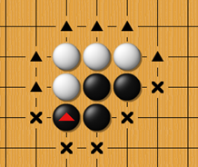
在這張圖中:黑有5氣，白有6氣
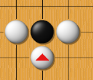
黑棋僅剩一氣
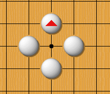
由於黑的氣沒了，因此就被提掉
打劫規則
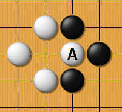
A這顆白子僅剩一氣
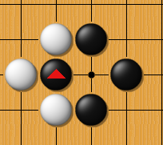
因此黑的下一步就提掉
但白的不能馬上提回去，因為這樣就會陷入無限循環，白棋如果要提回去，就要在別的地方下一步，黑的也跟著下一步，白的才能提掉黑三角那顆。
禁止自殺規則
下子時，除非能令對方某些子失去所有的氣，否則不得下子令自己某些子失去所有氣，這亦被稱為「禁止自殺規則」。
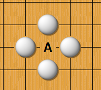
A這個位置黑棋不能下
勝負計算方法
目前世界上使用較多的有中國規則、日韓規則和應氏規則。其本質皆以圍地為目的行棋，由於對『地』這一概念三者存在邏輯上互相平行的不同說明，一直有分歧。經過改進對「地」的定義說明，去除人為硬性規定，現在三種規則的實踐中差異很小，只在極端情形下，才會有勝、平、負的差別。
日韓規則中，棋子所圍成的空白交叉點叫做目，最終以目多的一方為勝方，以
日本的圍棋規則稱為比目法。對局時需保留死子，終局後雙方將盤上死子及提
掉的死子填入對方實空中，再計算雙方實空。黑棋貼給白棋6目半（等於3又
1/4子和7點）。如果白棋實空加上貼目後多於黑方則白勝，否則黑勝。
計算勝負時，中國規則與日韓規則有所不同。按照中國規則（數子法），一盤棋
結束後，依玩家們的認定將棋盤上的某些棋子拿掉，作為死子，如果雙方對是
否死子產生爭議，通過實戰解決。之後，如果黑棋活的棋子加上包圍的交叉點
達到185（黑棋由於先行優勢須貼給白棋3又3/4子，等於7目半和8點）則
黑勝，少於此數目則白勝。
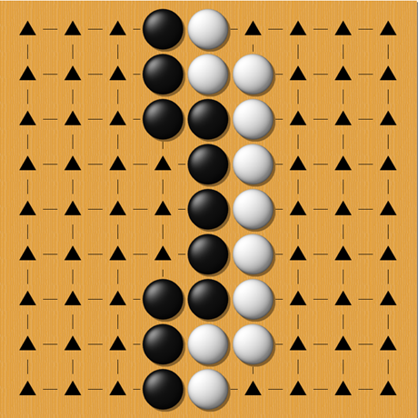
依照日韓規則:黑有30目，白有29目，但黑棋要貼6.5目，因此結果為白勝5.5目。
死活:
死活是圍棋術語，即一塊圍棋棋形是死是活的問題，也是圍棋中最重要的基本概念。
活棋原則:
兩個以上真眼或雙活
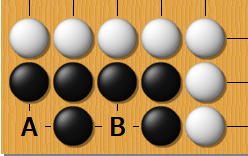
由於A和B白棋不能下，因此A和B是這塊黑棋的眼睛，那黑棋做出兩個眼睛，意味著白棋不可能殺死黑棋，黑棋活。
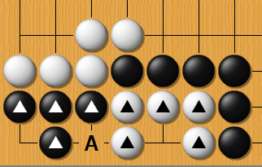
A點黑白雙方下了都會各剩一氣，然後就被提掉，因此我們稱被標記三角形的
黑棋和白棋形成雙活，黑棋活，白棋也活。
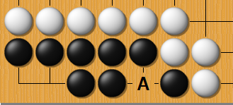
A看似是黑棋的眼，但其實是假眼，因為A右邊那顆黑棋剩一氣，所以這整塊
黑棋為死棋。
常見的死活型:
1.A位只要白下到黑死，黑走到黑活。
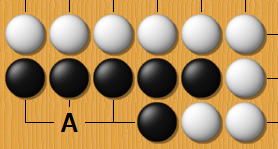
直三
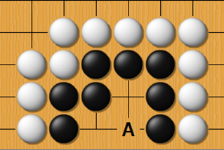
彎三
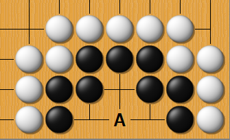
丁四
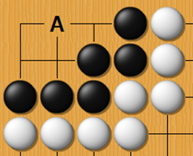
刀五
2.必活型
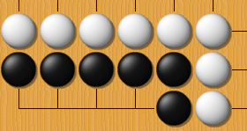
直四
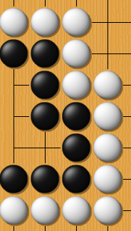
彎四
3.必死型:黑先下黑也死，白先下黑也死
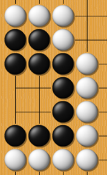
方四